Firebug
Проект по WWW технологии
Какво е Firebug?
Firebug се интегрира с Firefox, поставяйки богатство от developer tools в ръцете на програмиста. Той може да редактира, дебъгва и наблюдава CSS, HTML и JavaScript "на живо" на която и да е уеб страница.
Firebug е безплатна и open-sorce уеб приставка(екстеншън) за Mozilla Firefox, която улеснява дебъгването "на живо", редактирането и наблюдаването на CSS, HTML, DOM, XHR и JavaScript на който и да е уебсайт.
Firebug е лицензиран под BSD лиценза и първоначално е бил написан през януари 2006 от Joe Hewitt, едит от създателите на Firefox. Firebug Working Group ръководи open source разработването и подобряването на Firebug. Той има две главни имплементации - приставка за Mozilla FIrefox и буукмрклет(малко софтуерно приложение съхрявано като буукмарк в уеб браузър, което обикновено позволява на юзъра да взимодества с текущо зареденото приложение по някакъв начин) имплементация, наречена Firebug Lite,която може да се използва от Google Chrome.
В допълнение към дебъгването на уеб страници, Firebug е полезен инструмент за тестване на уеб секюрити и анализиране на перформънс на страници.
Firebug е безплатна и open-sorce уеб приставка(екстеншън) за Mozilla Firefox, която улеснява дебъгването "на живо", редактирането и наблюдаването на CSS, HTML, DOM, XHR и JavaScript на който и да е уебсайт.
Firebug е лицензиран под BSD лиценза и първоначално е бил написан през януари 2006 от Joe Hewitt, едит от създателите на Firefox. Firebug Working Group ръководи open source разработването и подобряването на Firebug. Той има две главни имплементации - приставка за Mozilla FIrefox и буукмрклет(малко софтуерно приложение съхрявано като буукмарк в уеб браузър, което обикновено позволява на юзъра да взимодества с текущо зареденото приложение по някакъв начин) имплементация, наречена Firebug Lite,която може да се използва от Google Chrome.
В допълнение към дебъгването на уеб страници, Firebug е полезен инструмент за тестване на уеб секюрити и анализиране на перформънс на страници.
Редактиране на стилове и DOM
HTML и CSS инструментите позволяват инспектирането и редактирането на CSS елементи в уеб страница.
По-късни версии на Firebug позволяват на потребителите да наблюдават на живо промените в CSS-са. Визуализацията на CSS елементи се показва, докато се инспектират HTML елементите. Firebug layout таба се използва, за да се показват и манипулират стойностите на CSS пропъртитата(свойствата). Още повече, потребителите може да кликват върху всеки видим HTML елемент на страницата и по този начин да достъпят CSS-са.
http://getfirebug.com/css http://getfirebug.com/dom Firebug CSS табовете казват всичко, което дивелъпъра има нужда да знае за стиловете на уеб страницата, и ако той не харесва това, което вижда - може да ги промени.


http://getfirebug.com/css http://getfirebug.com/dom Firebug CSS табовете казват всичко, което дивелъпъра има нужда да знае за стиловете на уеб страницата, и ако той не харесва това, което вижда - може да ги промени.
Инспектиране на йерархията
Без Firebug, дивелъпъра е оставен да се бори с елементи, които се появяват сини, когато се очаква да са черни. С Firebug дивелъпъра може да инспектира проблемния елемент и изключително бързо да разбере причината за проблема.
Firebug показва правилата, които са в йерархия и стилизират всеки елемент. Правилата са сортирани в ред на предимство и пропъртитата, които се презаписват, са зачертани с линия по средата. Всяко правило има линк обратно към файла, където е дефинирано, от където дивелъпъра може с един клик да отвори файла.
Firebug показва правилата, които са в йерархия и стилизират всеки елемент. Правилата са сортирани в ред на предимство и пропъртитата, които се презаписват, са зачертани с линия по средата. Всяко правило има линк обратно към файла, където е дефинирано, от където дивелъпъра може с един клик да отвори файла.
Преглед на цветове, картинки и шрифтове
Докато потребителя мърда мишката над цветове, шрифтове, градиенти или линкове към картинки в рамките на CSS таба, удобен туултип се появява, показващ стойността и носещ повече информация и детайли. Например туултипа за картинки показва размерите на оригиналната картинка, което може да спести много време на потребителя, особено, когато трябва да се напише CSS, за да се направи елемент да фитва точно размерите на картинка. Туултипа за шрифтове показва примерен текст с този шрифт и т.н.
Tweak tweak tweak
Редактирането на CSS никога не е било по-лесно. Едно кликване е нужно върху CSS пропърти, за да се появи инпут поле. Докато потребителят пише, промените са отразяват незабавно. Firebug аутокъмплийтва от списък с възможни стойност в същото време, докато потребителят редактира. За да не се запазят направените промени, може да използва Esc бутона. За да се отиде от едно пропърти на следващо, се използва таба.
Малко повече, малко по-малко
Аутокъмплийта спестява много време най-вече при писане на думи, но какво да кажем за случая, когато пишем числа? Ако потребителя се опитва да подравни нещо перфектно, просто може да използва стрелките нагоре и надолу, докато редактира число. Firebug инкрементира или декрементира числото със стъпка 1. С Shift+Up/Down и Ctrl+Up/Down се инкрементира/декрементира със стъпка 10, респективно с 0.1
Учене се по време на писане
Ако потребителят все още учи CSS, Firebug е прекрасен инструмент за научаване на спропъртитата. Докато редактира CSS пропърти, потребителят може да използва стрелките нагоре и надолу, за да мине през всички възможни пропъртита в азбучен ред. Firebug е снабден с целия речник от стандартни CSS ключове, както и с някои специфични за Mozilla добавки.
Има го, няма го
Много често решението на даден проблем може да бъде намерено чрез изключване на няколко CSS пропъртита и наблюдаване какво се случва без тях. Ако потребителят мине с мишката през всяко пропърти, той ще види малка кръгла иконка в ляво. При натискането й, той изключва това пропътри, а при натискането й отново - го включва отново.
Инспектиране на цял CSS файл
Докато HTML таба позволява инспектирането на CSS-а на един елемент, главният CSS таб позволява да се види целия CSS файл. Ако потребителят кликне на листа с файлове в туулбара, той ще види удобен смисък на всички CSS файлове, импортирани в уеб страницата.
Копиране на цветове и адреси на картинки
За много от дивелъпърите копи и пейст е сърцето на уеб разработката. Firebug прави лесно копирането на две от най-важните пропъртита на елемент - цветове и url-и на картинки. С десен клик се появява контекстно меню с възможност за копиране.
Когато се копира адрес на картинка, Firebug копира абсолютния път до картинкта, въпреки че CSS-а показва релативния.
Когато се копира адрес на картинка, Firebug копира абсолютния път до картинкта, въпреки че CSS-а показва релативния.
Отваряне на външен редактор
Отделни CSS файлове, показани от Firebug, могат да бъдат отворе от външни редактори или IDE-та. Firebug позволява също подходяшо да се конфигурират аргументи като номер на ред, адрес и т.н.
Калкулирани стилове
Firebug предлага панел, който показва всички CSS стилови стойности калкулирани от юзер агента, докато интерпретира дадена CSS информация за селектирания елемент в HTML панела. Иначе казано - показва реалната визуализирана стойност.
Показване на грешки в хода на редактиране на CSS свойства
,
Инлайн редактора, който се използва за редактиране на CSS свойства и техните стойности индикира дали инпута е коректен. Това става чрез промяна на цвета на стойността. Ако той е червен, значи не е коретно, ако е зелен - коректно.
CSS псевдо класове
Firebug позволява да се инспектира код, който използва псевдо класове като :hover, :active и :focus. Потребителят може да "заключи" селектиран елемент в даден стейт и по този начин мърдания на мишката не го променят.
Редактиране на сорс кода или само "на живо"
През повечето време Firebug показва обектите директно от браузъра. Въпреки че редактирането във Firebug е "на живо", то не променя сорс кода. За щастие CSS панела също така поддържа редактира на сорс кода. В този случай потребителят редактира директно кода на заредения файл.
Дебъгване на javaScript
Script таба на Firebug позволява на потребителите да задават брейкпойнти и да инспектират посредством стъпки редове от код. В допълнение Firebug може да навигира директно до ред от JavaScript код, експрешъни, които "наблюдаваме", кол стекове, и също така да зареди дебъгера, ако възникне грешка по време на изпълнение. Firebug може също да логва грешки. Логването използва Firebug JavaScript API. JavaScript панела на Firebug може да полгва грешки, извиквания на функции, и позволява на потребителя да изпълнява произволен JavaScript код от конзолата и също така позволява на потребителя да логва грешки, възникнали в JavaScript, CSS и XML. Firebug предоставя отделен текст едитор да модифицира JavaScript-а и да вижда незабавни резултати в браузъра на юзъра.
В скорошен ъпдейт се предоставя JavaScript command line аутокъплийтване на функции. Текстовия редактор също предостая възможността за писане на цели функции. Firebug изисква от потребителя да рефрешке уеб страницата, ако се получи така, че тя крашне.
В скорошен ъпдейт се предоставя JavaScript command line аутокъплийтване на функции. Текстовия редактор също предостая възможността за писане на цели функции. Firebug изисква от потребителя да рефрешке уеб страницата, ако се получи така, че тя крашне.
Лесно намиране на скриптове
Много уеб приложения се състоят от голям брой редове и намирането на това, което потребителя иска да дебъгне, може да бъде тежко. Бутона със скриптови файлове на Firebug сортира и организира файловете в много чист лист, който помага за намирането на всеки файл много бързо. При писане на име, листа се филтрира.
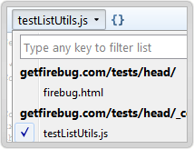
Спиране на изпълнението по всяко време
Firebug позволява на потребителите да слагат брейкпойнти, които казват на дебъгера да спре изпълнението, когато той достигне конкретен ред. Докато изпълнението е паузирано, потребителя може да види стойността на която и да е променлива и да инспектира обектите, докато времето е спряло.
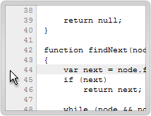
Спиране на изпълнението, но само ако...
Брейкпойнтите могат да създават проблеми, ако спират изпълението твърде често. Понякога потребителя просто иска да спре изпълнението при много специфични обстоятелства. Firebug позволява на потребителя да създаде условни брейкпойнти, които проверяват даден израз, който трябва да бъде истина, за да накара брейкпойнта да сппре.
За да създаде условен брейкпойнт, потребителя просто трябва да кликне с дясното копче на който и да е ред. Облаче се появява, което подканва поребителя да въведе JavaScript израз. Той може да кликне с дясното копче отново по всяко време, за да промени израза, или с лявото копче, за да премахне изцяло брейкпойнта.
За да създаде условен брейкпойнт, потребителя просто трябва да кликне с дясното копче на който и да е ред. Облаче се появява, което подканва поребителя да въведе JavaScript израз. Той може да кликне с дясното копче отново по всяко време, за да промени израза, или с лявото копче, за да премахне изцяло брейкпойнта.
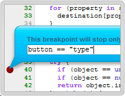
С малки стъпки
След като дебъгера е спрял, постребителя може да продължи изпънението по всяко време. Това му позволява да види точно как променливите и обектите са афектирани, когато точно определн ред от кода се изпълни.
Потребителя също така може да избере да "навлезе" в изпълнението повече от един ред. От контекстното меню той трябва да избере "Run to this line", за да продължи изпълнението, докато то премине през реда, който той е кликнал.
Потребителя също така може да избере да "навлезе" в изпълнението повече от един ред. От контекстното меню той трябва да избере "Run to this line", за да продължи изпълнението, докато то премине през реда, който той е кликнал.
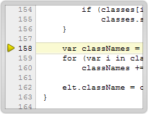
Спиране при грешка
Не винаги потребителя избира да използва дебъгера, понякога дебъгера ги избира. Firebug дава на потребителя опция да спре в дебъгера автоматично, когато се появи грешка, като по този начин той може да разнищи какъв е проблема.
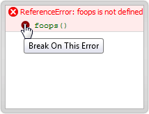
Stack trace
Когато дебъгера е спрял, Firebug показва на потребителя стек трейса, който представлява множество от вложени извиквания на функции, които в този момент се изпълняват и искат да приключат.
Стека с извиквания на функции се представлява от компакни бутони в туулбара, като всеки един от тях е име на функция от стека. Потребителя може да кликне който и да е бутон, за да прескочи до реда, където тази функция е спряла, и да погледне локалните променливи във функцията.
Стека с извиквания на функции се представлява от компакни бутони в туулбара, като всеки един от тях е име на функция от стека. Потребителя може да кликне който и да е бутон, за да прескочи до реда, където тази функция е спряла, и да погледне локалните променливи във функцията.
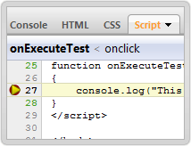
Наблюдаване на изрази
Докато дебъгва, потребителя често иска да види стойността на сложен израз или обект, които са скрити в DOM-a. Firebug позволява на потребителя да напише произволен JavaScript израз, чиято стойност ще се ъпдейтне всеки път, когато се инспектира нещо с дебъгера.
За по бързо писане на израз, потребителя може да използва таб бутона, за да аутокъмплийтне пропъртита на обекти.
За по бързо писане на израз, потребителя може да използва таб бутона, за да аутокъмплийтне пропъртита на обекти.
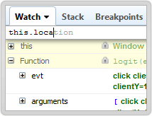
Множество туултипи
Докато дебъгера е паузиран, потребителя може да мърда мишката над която и да е променлива в текущата функция, за да види туултип, който показва стойността на променливата. Това е много удобен начин потребителя да остане фокусиран върху кода и в същото време да намери въпросите, които търси.
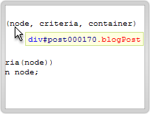
JavaScript перформънс
Следната ситуация: уеб приложението на потребителя е почти перфектно. Оправил е всички бъгове, приложението изглежда много арт, потребителите просто го обожават. Но има един проблем - някои от фийчърите на сайта са леко бавни и потребителя не е сигурен каква е причината за това.
С Firebug потребителя няма повече да се чуди защо кода е бавен. С Firebug профайлъра потребителя може да разграничи бързи от бавните части на уеб приложението му за секунди.
За да използва профайлъра, потребителя трябва да отиде на таба конзола и да кликне Profile бутона.След това трябва да изпълни приложението за известно време или да релоудне страницата и след това да кликне Profile бутона отново. След това той ще види детайлен репорт, който показва какви функции са били извикани и колко време е отнело на всяка.
С Firebug потребителя няма повече да се чуди защо кода е бавен. С Firebug профайлъра потребителя може да разграничи бързи от бавните части на уеб приложението му за секунди.
За да използва профайлъра, потребителя трябва да отиде на таба конзола и да кликне Profile бутона.След това трябва да изпълни приложението за известно време или да релоудне страницата и след това да кликне Profile бутона отново. След това той ще види детайлен репорт, който показва какви функции са били извикани и колко време е отнело на всяка.
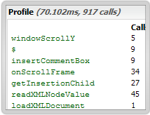
Логване на извиквания на функции
Понякога проблемна функция се вика толкова много пъти, че потребителя не може да спре в дебъгера всеки път. Потребителя просто иска да знае кога тя е извикана и какви параметри са били подадени.
За да тракне всички извиквания на функция, потребителя просто трябва да кликне на скрипт таба и да избере "Log calls to function_name". След това трябва да отиде на таба конзола и там може да види всички извиквания.
За да тракне всички извиквания на функция, потребителя просто трябва да кликне на скрипт таба и да избере "Log calls to function_name". След това трябва да отиде на таба конзола и там може да види всички извиквания.
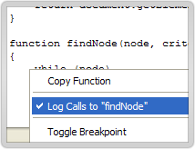
Отиди деректно на ред 108
Често потребителя иска да прескочи деиректно до конкретен ред от скрипта. И това е много лесно - потребителя трябва да напише номера на реда в сърч бокса, предшестван от диез.
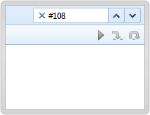
Код, генериран от браузъра или от eval()
Поради многжество причини, Firefox генерира малки JavaSccript функции. Те се появяват във Firebug под адреса на страницата, от която са били генерирани, следвани от event и с име, наследено от техния сорс код. Потребителя може да сложи брейкпойнт на тези функции както на всяка друга.
По подобен начин JavaScript, генериран от eval() се появява в списъка с файлове под адреса на страницата, която е извикала eval(), със сорс код резюме за име.
По подобен начин JavaScript, генериран от eval() се появява в списъка с файлове под адреса на страницата, която е извикала eval(), със сорс код резюме за име.
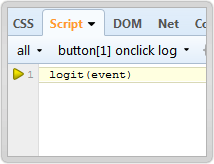
Изпълнимите редове са маркирани
Скрипт панела на Firebug използва зелен цвят за номен на ред, ако съответния ред се изпълнява. По този начин потребителя може по всяко време да знае къде да сложи брейкпойнт.
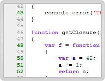
Нотификации
Дебъгерът може да задържи изпълнение на JavaScript поради много причини. Например дебъгера моде да достигне стандартен скриптов брейкпойнт, HTML брейкпойнт, XHR или брейкпойнт за грешка и т.н. За да е сигурен, че потребителя разбира правилната причина, Firebug показва нотификация с детайли.
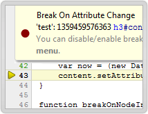
Отваряне във външен редактор
Отделни скриптови файлове, показани от Firebug, могат да бъдат отворени с външни редактори или IDE-та. Firebug също така позволява правилно да се конфигурират аргументи като номер на ред, адрес и т.н,
Използване на конзолата
https://getfirebug.com/wiki/index.php/Console_Panel
Конзолата предлага три различни функционалности. Тя показва всички съобщения, които конзолата с грешките показва. Но повече от това - тя показва резултати от команди, които потребителя въвежда в конзолата. Също така тя има интегриран профайлър за JavaScript дейности.
Javascript и DOM елементи
| Тип | Показвана стойност | Обяснение |
|---|---|---|
| undefined | undefined | |
| null | null | |
| boolean | true | true или false |
| integer, float | 123, 123.4 | |
| infinity | Infinity | Позитивни стойности се изписват като Infinity, негативни - като -Infinity |
| NaN | NaN | Nan(not a number) се получава, когато се раздели 1/0. |
| string | "String" | Стринговете се изписват с двойни кавички. Ако са твърде дълги, се отрязват и се замества с ... Дължината може да се сетне от extensions.firebug.stringCropLength |
| array | ["item1", "item2", 4 more...] | Размера може да се сетне от extensions.firebug.ObjectShortIteratorMax |
| object | 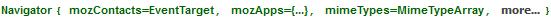 | Типа на обекта се показва в случай, че може да бъде определен, в противен случай - Обект, последван от айтъмс. Размера на показваните айтъмс може да сетне от exensions.firebug.ObjectShortIteratorMax |
| function | compare(str1, str2, options) | функциите се показват, като се показва техния хедър, тоест параметрите, и името на функцията, ако може да бъде определено, иначе - функция |
| array-like object | 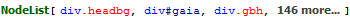
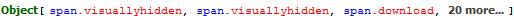 |
Масиво-подобни обекти са такива, които могат да бъдат обходени, тоект имат индекси. Типа на обекта се показва в случай, че може да бъде определен, иначе - Обект. |
| DOM node | div.cursor_off.vt.issuecomment, div#footer | |
| window | 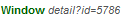 | |
| document | 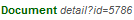 | |
| regular expression | 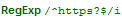 | |
| application cache | 0 items in offline cache | показва колко елемента се държат в кеша |
| storage | 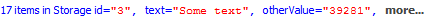 | показва колко елемента се държат в сториджа |
| browser history | 3 history entries | |
| CSS rules | 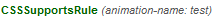 | CSS правила се показва като типа се показва първо с допълнителна информация, свързана с правилото. |
Клик функционалност
Конзол съобщенията предлагат на потребителя различни типове опции, които могат да бъдат достъпени с мишката. Например - клик върху линк на съобщение за грешка или warning праща директно към подходящия панел; десен клик върху тях дава възможност за копиране на съобщението или сетване на брейкпойнт за конкретната грешка. XML HTTP заявки съответно дават възможност да се копира локацията или респонса чрез контекстното меню.
Профилиране
Конзолата предлага възможност за профилиране на JavaScript дейност и информация за използване на памет чрез два бутона в туулбара на Panel. Профайлъра позволява на потребителите да наблюдават JavaScript дейности и да получат статистики за това. CPU профилиране позволява да се получи информация за извикване на JavaScript функции.
Memorybug е екстеншън на Furebug за получаване на повече информация за работата с паметта.
Memorybug е екстеншън на Furebug за получаване на повече информация за работата с паметта.
Управление на бисквитки
Firebug позволява на потребителя да види и менажира бисквитки в своя браузър. Може да откаже бисквитки за определени сайтове, да филтрита бисквитки, да създава нови и да трие съществуващи. Потребителя може също така да спре дебъгера, когато определена бисквитка промени стойността си и да види реда в скрипта, който е причинил промяната.
Инспектиране на бисквитки
Всяка бисквитка в списъка може да бъде "разширена". Това е полезно особено, когато стойността на бисквитката е много дълга и не може да бъде визуализирана цялата. Ако потребителя търси бисквитка с конкретно име, може да използва сърчбокса на браузъра и да напише името й. Листа се филтрира динамично, докато се въвежда инпут в сърчбокса.
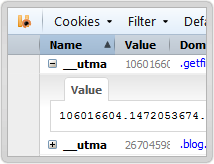
Права на бисквитки
Потребителя може и да менажира правата на бисквитките за текущия сайт директно през туулбара на Firebug. Бутона за права визуализира текущия статус като лейбъл и се ъпдайтва авоматично, ако правото се промени(например през диалога с опции на браузъра).
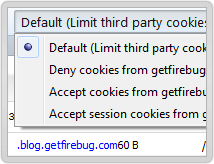
Събития
Ако потребителят иска да види кога нещо се случва с ббисквитка, може да използва Console таба на Firebug. Cookies панела логва информация всеки път, когато бисквитка е създадена, променена, изтрита или отхввърлена. Това може да бъде изключено от Cookie -> Options менюто.
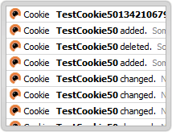
"Срок на годност" на бисквитки
"Срок на годност" на бисквитки се показва, конвертирано към локалната таймзона и текущата Firefox локална таймзона. Лесно е да се пресметке реалната стойност. Възможно е и да се промени текущата стойност, използвайки попъп календар и таймпикър.
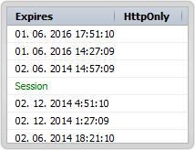
Експортиране на бисквитки
Потребителят може да използва менюто Cookies, за да създаде нови или да премахне съществуващи бисквитки. Същото това меню може да се използва, за да експортира всички бисквитки в браузъра или само тези, които са асоциирани с текющата страница в cookie.txt файл в стандартен текст формат(всяка бисквитка заедно с информация за неща се помества на един ред).
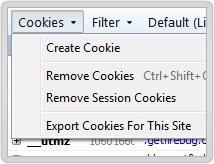
Клипборд за бисквитки
Стандартни клипборд функционалности като Изрежи/Копирай/Постави са също поддържани. Ако потребителят се нуждае от тях, той трябва само да кликне върху бисквитката и да използва контекстното меню. Трябва само да избере редактиай и да използва диалога, който се показва.
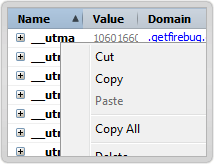
Изпратени и получени бисквитки
Панела Cookies е също интегриран със съществуващия Net панел. Ако потребителя разтвори съществуващ рикуест в панела, той ще види допълнителен таб Cookies, който показва изпратени и получени бисквитки с всичката информация за тях на място.
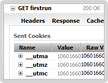
JSON инспектор
Ако стойността на бисквитката е форматирана като JSON, има JSON таб, показващ стойността, използвайки разтварящо се дърво. Подобно на мрежови отговори в Net панела на Firebug.
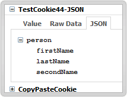
XML инспектор
Ако стойността на бисквитката е валиден XML документ, има умного удобен XML таб, показващ добре форматирано и оцветено XML-a.
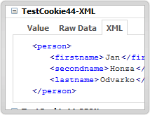
document.cookie
По-добро форматиране е имплементирано сега за document.cookie пропъртито, когато бисквитката е логната в Console панела.
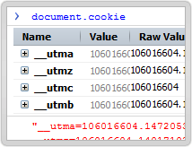
Брейкпойнт на бисквитка
Потребителя може да създаде брейкпойнт на бисквитка, за да види кога конкретна бисквитка бъде модифицирана. Firebug дебъгера е интегриран по такъв начин, че потребителя може да види кой ред в сорс кода причинява модификацията.
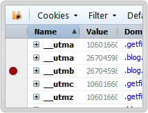
Условие за брейкпойнт
Потребителя може да създава условия за брейкпойнт и брейкпойнта ще спре само ако условието се изпълни. Потребителя може да използва пропъртита на бисквитки - стойност, път, хост, дата на изтичане в милисекунди и тн.
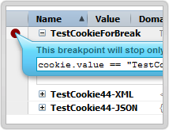
Спиране при следваща промяна на бисквитката
Панела Бисквитки се интегрира с функционалността на Firebug - Break on Feature. Потребителя просто трябва да използва бутона "продължи", за да спре при следваща промяна на бисквитката.
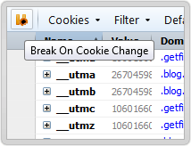
Грешки
Когато нещата се влошат, Firebug дава на потребителя незабавно информация за това, която е детайлна и полезна. Репортва грешки възникнали в JavaScript, CSS и XML код.
Без излишества
Повечето браузъри репортват грешките чрез дъмпване на всички тях в един голям прозорец, който включва проблемите с всяка уеб страница, която потребителя е посетил. Firebug е малко по-мил от отва - той показва само грешките за страницата, която е текуща в момента.
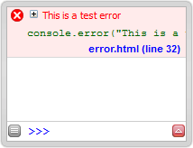
Информативни JavaScript грешки
JavaScript грешките включват богатство от информация за това кое кога се е случило, включващи описание, файл и номер на ред и ред от сорс кода, където грешката е възникнала. Дори повече - ако потребителя кликне плюсчето за разгръщане на грешката, ще види целия стек трейс, включващ стойностите на всички аргументи на функцията.
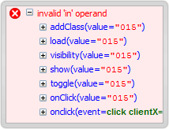
Отиване до дебъгера
Всеки репорт за грешки има линк в дясната си страна, който сочи към файла и номера на реда, където грешката е възникнала. С клик въхру този линк, потребителя бива отведен до JavaScript дебъгера на Firebug или CSS инспектора, така че той може да започне да решава проблема веднага.
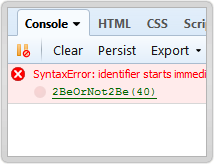
Търсене
Използвайки сърч бокса, потребителя може да филтрира Firebug конзолата да показва само грешки и съобщения, които съвпадат с текста, който той търси. Ако нови редове се добавят към конзолата, те ще се появят само, ако съвпаднат с текста от сърч бокса.
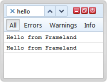
Филтриране на грешките
Firebug е способен да репортва грешки, възникнали в JavaScript, CSS, XML файлове. Ако потребителя има нужда от репорт за грешки само в някои от тези езици, той може да ънчекне тези, които не иска да вижда. И може да го направи от менюто в Console.
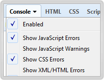
Позиция на грешката
В случай на JavaScript грешки, Console панела показва стрелка, сочеща към точната позиция вътре в реда, където грешката е възникнала.
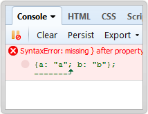